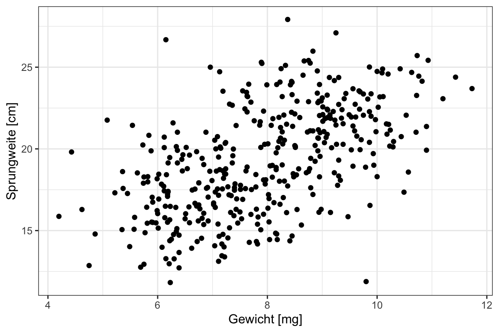

8 Von vielen Flöhen auf Hunden und Katzen
Version vom November 02, 2022 um 12:28:46
Wir schauen uns in diesem Beispiel wiederum nur zwei Tierarten an: Hunde und Katzen. Auf diesen Tierarten messen wir wieder die Sprunglänge in [cm] von jeweils 400 Tieren. Im Vergleich zu dem vorherigen Beispiel erweitern wir die Daten um eine Spalte jump_weight in [mg] sowie sex [male, female]. Bei Versuch wurde noch in der Variable hatch_time gemessen, wie lange die Flöhe in Stunden zum Schlümpfen brauchen. Es ergibt sich folgende Tabelle 8.1 mit den ersten zehn Beobachtungen und die dazugehörige Abbildung 8.1.
| animal | sex | weight | jump_length | flea_count | hatch_time |
|---|---|---|---|---|---|
| cat | male | 6.02 | 15.79 | 5 | 483.60 |
| cat | male | 5.99 | 18.33 | 1 | 82.56 |
| cat | male | 8.05 | 17.58 | 1 | 296.73 |
| cat | male | 6.71 | 14.09 | 3 | 140.90 |
| cat | male | 6.19 | 18.22 | 1 | 162.20 |
| cat | male | 8.18 | 13.49 | 1 | 167.47 |
| cat | male | 7.46 | 16.28 | 1 | 291.20 |
| cat | male | 5.58 | 14.54 | 0 | 112.58 |
| cat | male | 6.19 | 16.36 | 1 | 143.97 |
| cat | male | 7.53 | 15.08 | 1 | 766.31 |
Die Datentabelle ist in dieser Form schon fast nicht mehr überschaubar. Daher hilft hier die explorative Datenanalyse weiter. Wir schauen uns daher die Daten einmal als einen Scatterplot in Abbildung 8.1 an. Wir sehen hier, dass wir das mit dem Gewicht [mg] der Flöhe auch die Sprungweite in [cm] steigt.

Du findest die Datei flea_dog_cat_length_weight.xlsx auf GitHub jkruppa.github.io/data/ als Excel oder auch als CSV.